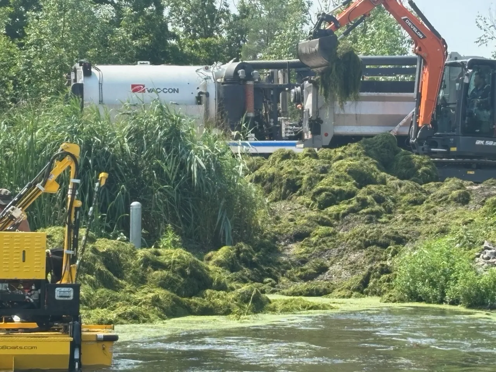
Aquatic Weed Harvesting
Cut and collect dense aquatic vegetation from lakes, ponds, coves, and shared waterways.
Aquatic Weed Harvesting LLC · Based in the Hudson Valley
Aquatic Weed Harvesting LLC provides mechanical aquatic weed harvesting, lake weed removal, pond weed removal, shoreline clearing, muck removal, and floating debris cleanup across New York, New Jersey, and Pennsylvania.
We use sustainable, environmentally responsible mechanical methods to cut, collect, and remove unwanted aquatic vegetation without using herbicides, helping homeowners, businesses, lake associations, and municipalities reclaim overgrown bodies of water.
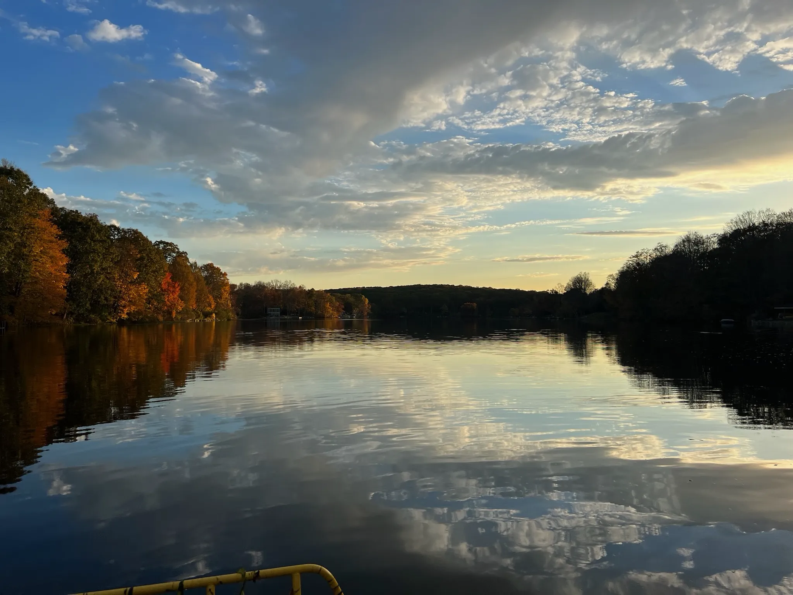
Aquatic Weed Harvesting LLC
Focused Exclusively on Clearing Lakes, Ponds, and Shorelines
Aquatic weed removal is not an add-on service for us. It is the focus of our business.
We manage submerged weeds, rooted vegetation, invasive aquatic plants, muck, leaves, algae, branches, and floating debris. Each project is planned around the waterbody, the affected area, and how the property needs to use the water.
Our work goes beyond surface clearing. By removing excessive aquatic vegetation and biomass from the water, we help restore access, improve visibility, and support healthier waterway conditions.
Learn About Our CompanyMechanical Aquatic Vegetation Management

Cut and collect dense aquatic vegetation from lakes, ponds, coves, and shared waterways.
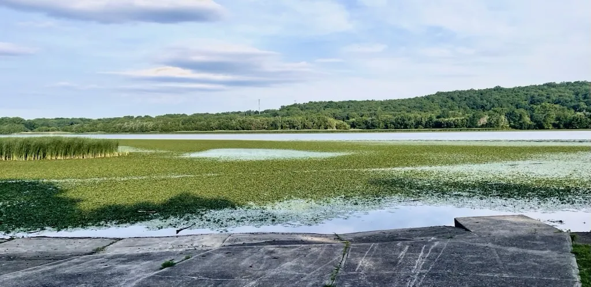
Clear weeds from docks, swimming areas, boat lanes, shorelines, and other high-use lakefront areas.
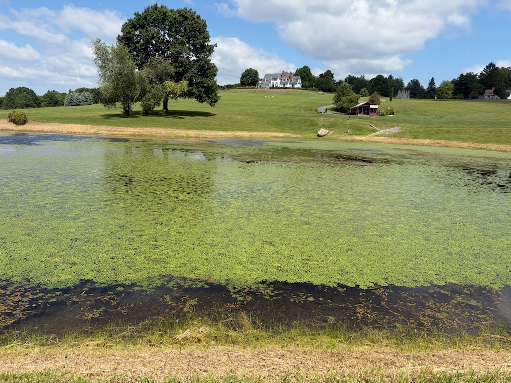
Remove lily pads, cattails, algae, and unwanted growth from private, farm, community, and commercial ponds.
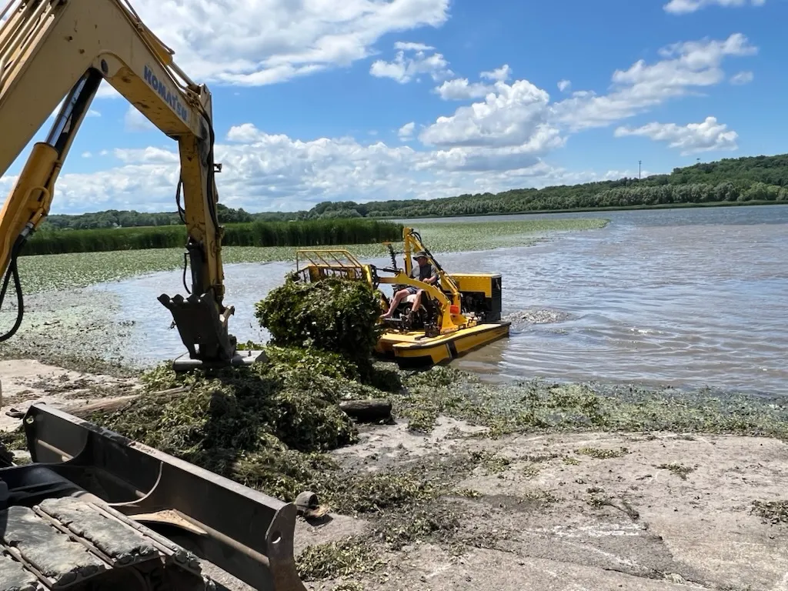
Clear overgrown waterfront areas, cattails, rooted vegetation, brush, and qualifying branches.
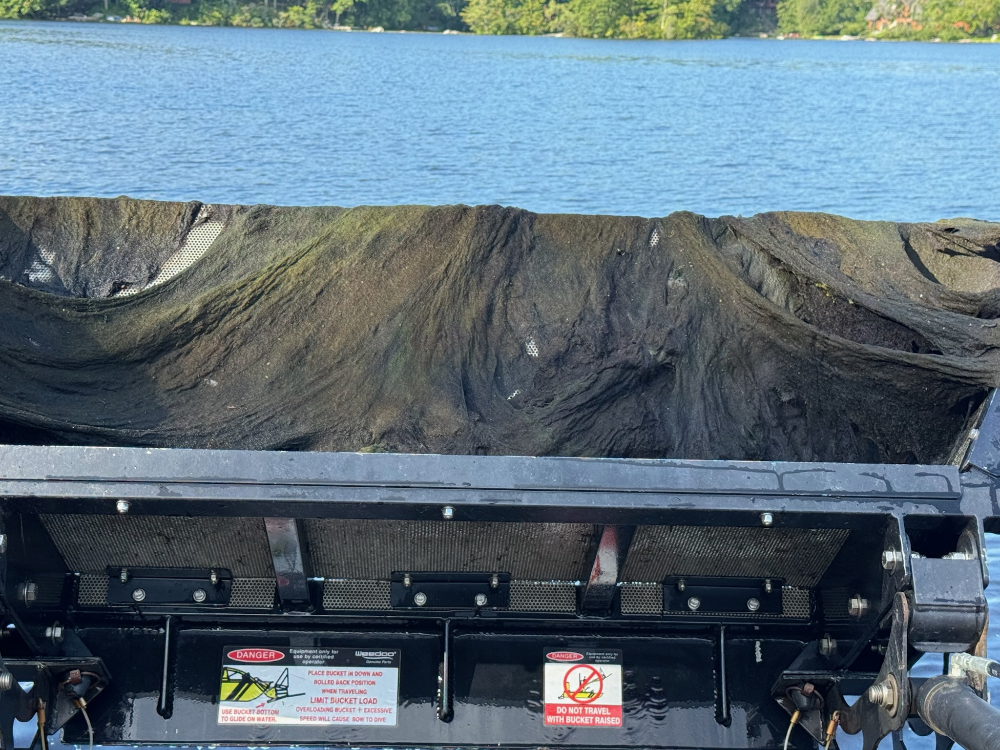
Physically remove accumulated organic sediment from selected docks, shorelines, swimming areas, and shallow sections.
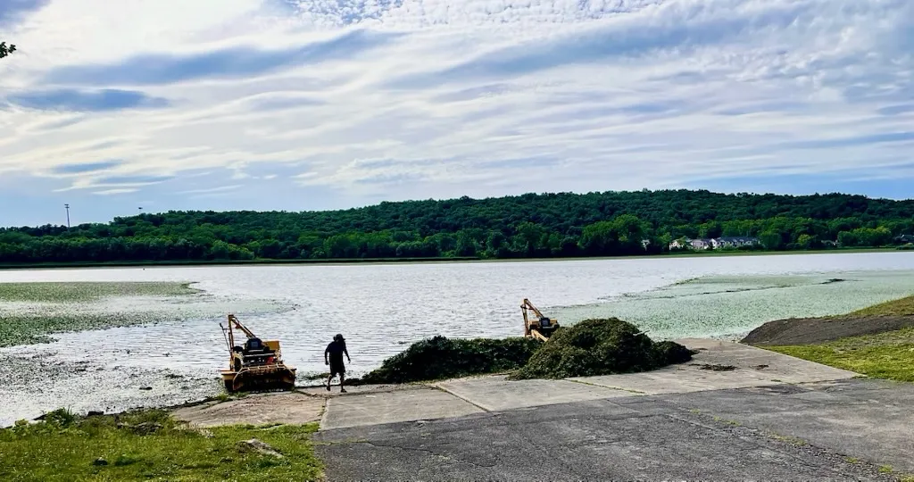
Collect floating leaves, organic material, branches, logs, and storm debris from lakes and ponds.
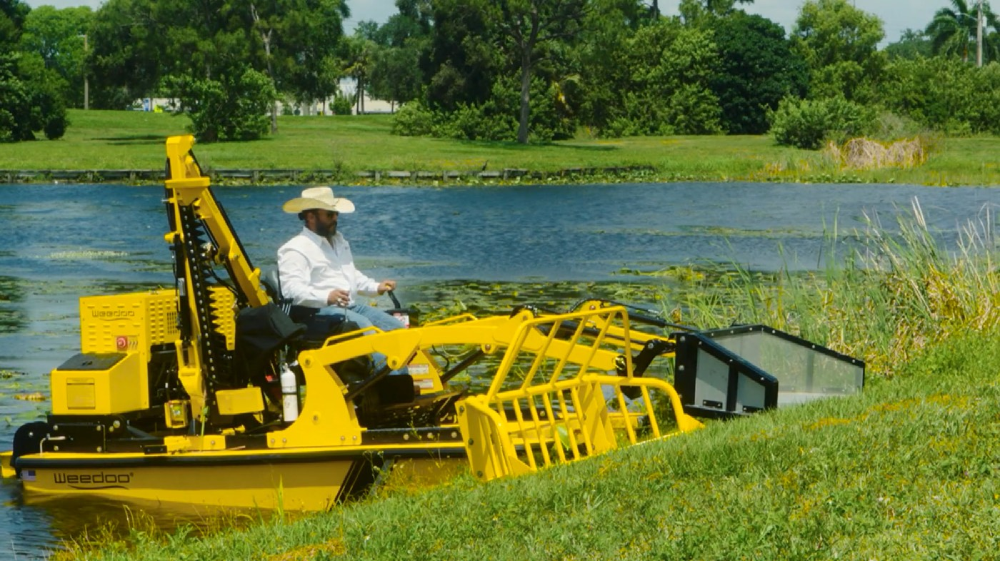
Control Eurasian watermilfoil, water chestnut, phragmites, hydrilla, and other invasive plants before dense growth restricts navigation, swimming, and native habitat.
Before & After
Drag the slider to see what comes out of the water.
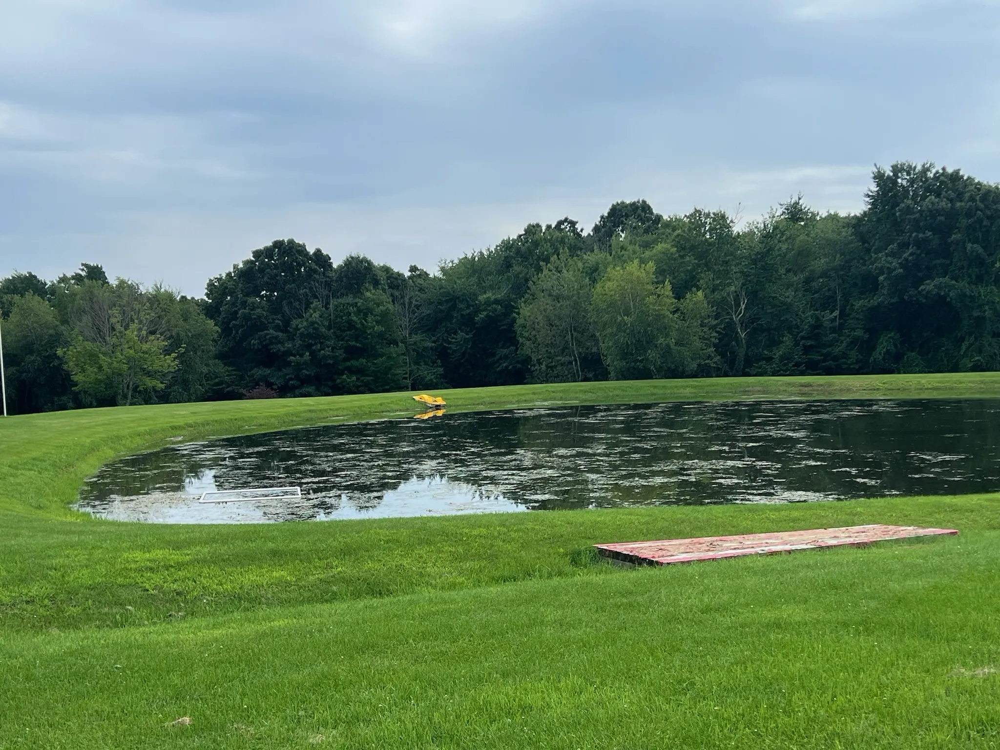
After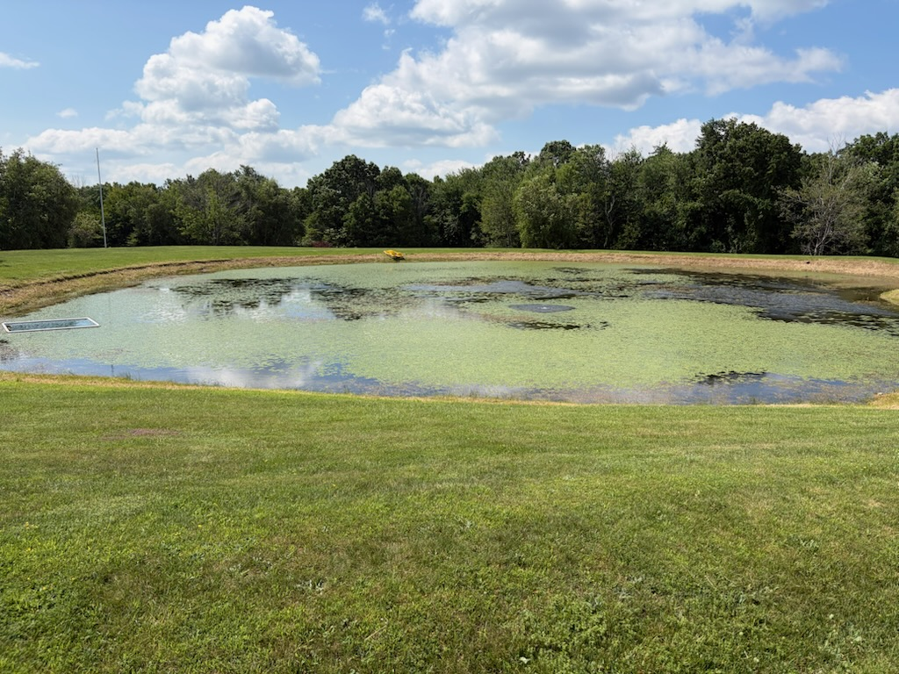
BeforePhysical Removal Without Herbicide Application
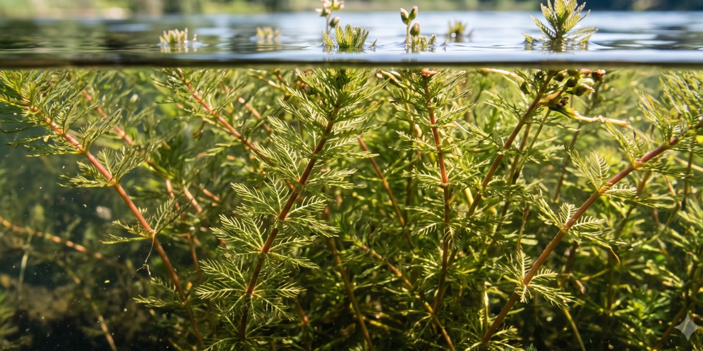
Dense, feathery vegetation that propagates easily from small floating fragments. It quickly creates thick mats capable of choking boat propellers, making it the primary reason property owners reach out to us.
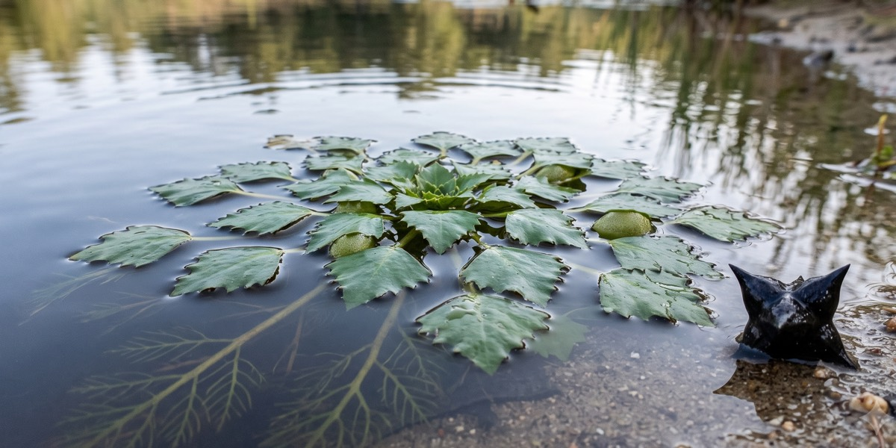
Dense floating clusters that crowd the water's surface and deposit sharp nutlets along shorelines. Prompt action is critical, so we perform mechanical extraction prior to seed release.
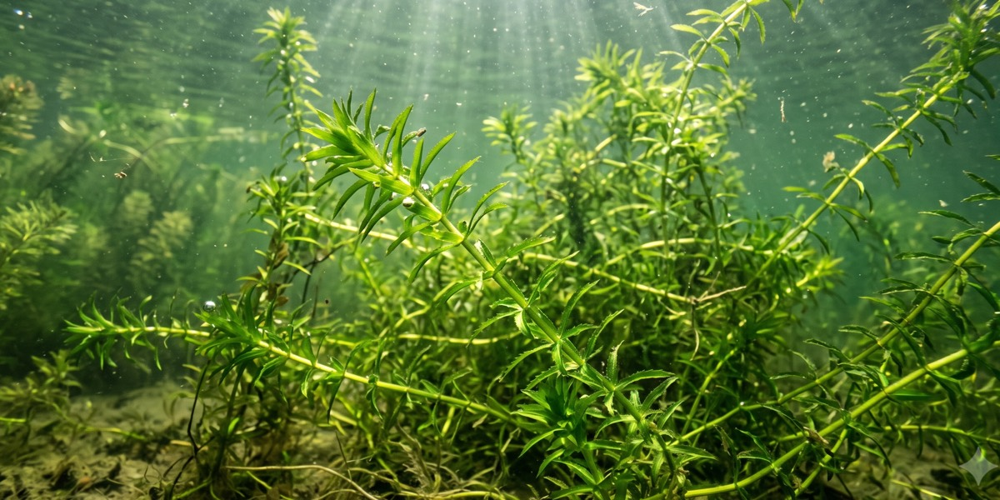
Rapid-spreading and strictly managed throughout New York State. Because it regenerates from underground tubers, ongoing seasonal mechanical harvesting is required to keep it fully under control.
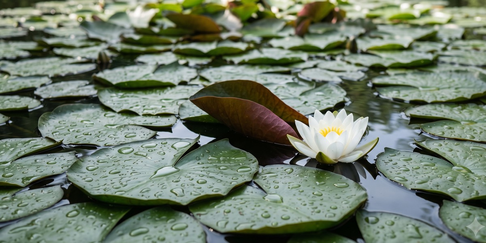
Dense growths that snare swimmers and immobilize small watercraft. We open up dock areas and navigation channels while preserving designated sections for aquatic life upon request.
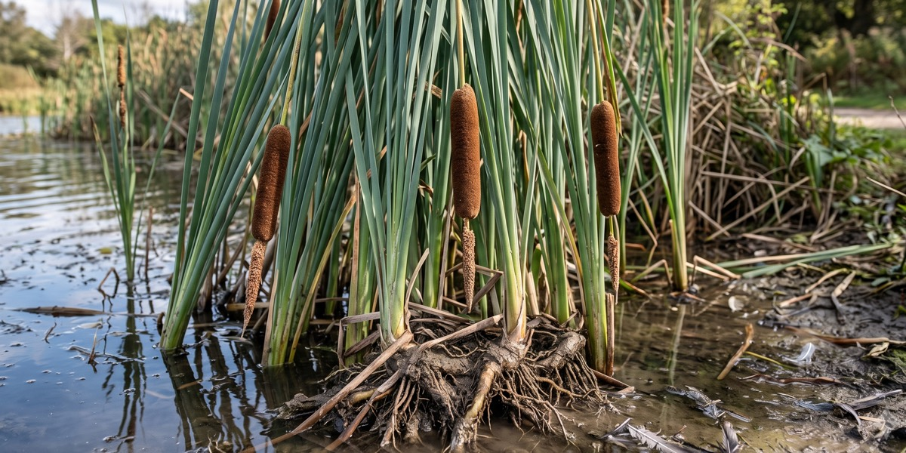
Dense, deeply rooted growth requires specialized equipment. Rather than simple cutting, we excavate the full root system to prevent further expansion across your waterbody.
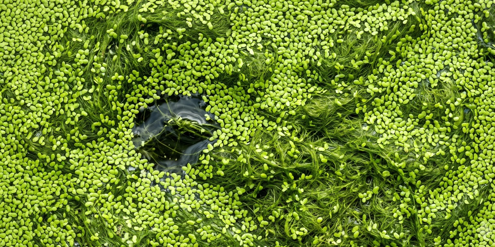
Floating film that gathers along shoreline areas. We skim and extract it from the water before it darkens your waterfront.
Aquatic Weed Removal for Every Waterfront
Private lakefront weed control, lake dock weed cleaning, residential pond cleaning, shoreline clearing, and swimming-area maintenance.
HOA pond maintenance, golf course pond weed management, marina weed removal, campground waterfront cleanup, and resort lake maintenance.
Municipal lake weed management, public beach weed removal, boat-launch clearing, and lake association weed harvesting.
Experience and Approach
Our work is centered on lakes, ponds, shorelines, and aquatic vegetation. We understand the equipment, access challenges, and seasonal timing involved.
We select the removal method based on the vegetation, sediment, debris, water depth, and treatment area.
You know which areas will be treated, how we'll remove the material, and what results to expect.
We explain when one-time removal may be appropriate and when seasonal maintenance is more realistic.
Based in the Hudson Valley, we serve residential, commercial, association, and municipal projects throughout New York, New Jersey, and Pennsylvania.
Free Project Review
Tell us what is growing, where the problem is located, and how it is affecting your property. We will recommend the appropriate removal service and provide a no-obligation estimate.